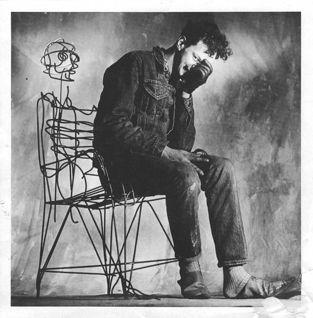

Tom Dixon x The Gerardo Guide

Funk, Form
& Future
Are you tired of hearing me talk about chairs yet? I’ve partnered with the good folks at Tom Dixon for an evening of design and wine at their Tribeca showroom. We’ll point at chairs, drink wine, and preview his newest sofa.
Tom Dixon New York Studio
186 Franklin Street
Tribeca, New York
Monday, November 9
5:30–7 pm